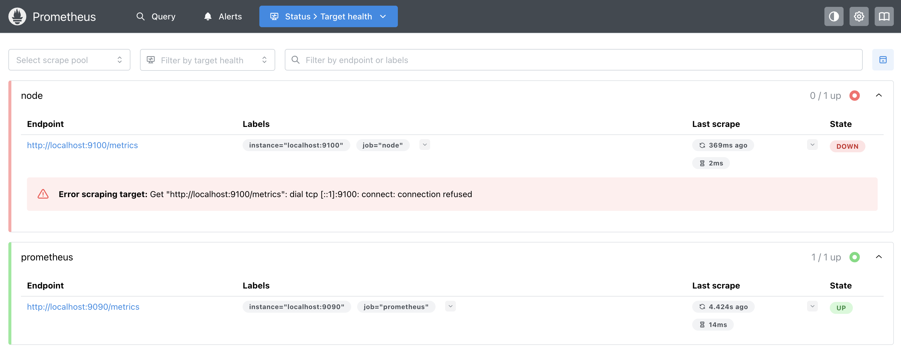
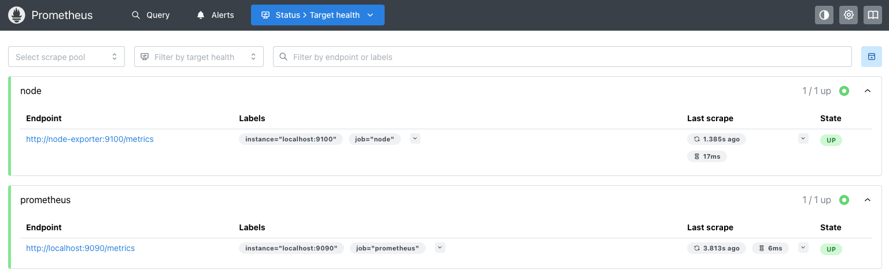

installs
directory before unpacking it. It should look something like this:
$ mv [PATH-TO-DOWNLOAD]/prometheus-3.13.1.darwin-amd64.tar.gz ./installs
$ tar -xzvf installs/prometheus-3.13.1.darwin-amd64.tar.gz -C ./installs/
x prometheus-3.13.1.darwin-amd64/
x prometheus-3.13.1.darwin-amd64/LICENSE
x prometheus-3.13.1.darwin-amd64/prometheus.yml
x prometheus-3.13.1.darwin-amd64/promtool
x prometheus-3.13.1.darwin-amd64/prometheus
x prometheus-3.13.1.darwin-amd64/NOTICE
$ cat support/workshop-prometheus.yml
# workshop config
global:
scrape_interval: 5s
scrape_configs:
# Scraping prometheus.
- job_name: "prometheus"
static_configs:
- targets: ["localhost:9090"]
# Scraping node exporter.
- job_name: "node"
static_configs:
- targets: ["localhost:9100"]
prometheus.yml file. Also note, the in
memory database is stored by default in ./data. Note: might need to approve the
file in security settings if it fails to start. (scroll to view log):
$ ./installs/prometheus-3.13.1.darwin-amd64/prometheus --config.file support/workshop-prometheus.yml
...
time=2026-08-25T12:48:44.620+02:00 level=INFO source=main.go:1724 msg="updated GOGC" old=100 new=75
time=2026-08-25T12:48:44.621+02:00 level=INFO source=main.go:789 msg="Leaving GOMAXPROCS=18: CPU quota undefined" component=automaxprocs
time=2026-08-25T12:48:44.621+02:00 level=INFO source=memlimit.go:198 msg="GOMEMLIMIT is updated" component=automemlimit package=github.com/KimMachineGun/automemlimit/memlimit GOMEMLIMIT=46385646796 previous=9223372036854775807
time=2026-08-25T12:48:44.621+02:00 level=INFO source=main.go:896 msg="Starting Prometheus Server" mode=server version="(version=3.13.1, branch=HEAD, revision=73ff57ce2b8161059ac7fe5188f03f1c3d22b29a)"
time=2026-08-25T12:48:44.621+02:00 level=INFO source=main.go:901 msg="operational information" build_context="(go=go1.26.5, platform=darwin/amd64, user=root@bbc9c3b11b52, date=20260710-08:17:53, tags=netgo,builtinassets)" host_details=(darwin) fd_limits="(soft=184320, hard=unlimited)" vm_limits="(soft=unlimited, hard=unlimited)"
time=2026-08-25T12:48:44.708+02:00 level=INFO source=web.go:727 msg="Start listening for connections" component=web address=0.0.0.0:9090
time=2026-08-25T12:48:44.708+02:00 level=INFO source=main.go:1456 msg="Starting TSDB ..."
time=2026-08-25T12:48:44.710+02:00 level=INFO source=tls_config.go:354 msg="Listening on" component=web address=[::]:9090
time=2026-08-25T12:48:44.711+02:00 level=INFO source=tls_config.go:357 msg="TLS is disabled." component=web http2=false address=[::]:9090
time=2026-08-25T12:48:44.716+02:00 level=INFO source=head.go:709 msg="Replaying on-disk memory mappable chunks if any" component=tsdb
time=2026-08-25T12:48:44.716+02:00 level=INFO source=head.go:795 msg="On-disk memory mappable chunks replay completed" component=tsdb duration=13.292µs
time=2026-08-25T12:48:44.716+02:00 level=INFO source=head.go:803 msg="Replaying WAL, this may take a while" component=tsdb
time=2026-08-25T12:48:44.719+02:00 level=INFO source=head.go:898 msg="WAL segment loaded" component=tsdb segment=0 maxSegment=0 duration=2.433833ms
time=2026-08-25T12:48:44.719+02:00 level=INFO source=head.go:935 msg="WAL replay completed" component=tsdb checkpoint_replay_duration=136.708µs wal_replay_duration=2.456084ms wbl_replay_duration=51.875µs chunk_snapshot_load_duration=0s mmap_chunk_replay_duration=13.292µs total_replay_duration=2.674541ms
time=2026-08-25T12:48:44.720+02:00 level=INFO source=main.go:1477 msg="filesystem information" fs_type=1a
time=2026-08-25T12:48:44.720+02:00 level=INFO source=main.go:1480 msg="TSDB started"
time=2026-08-25T12:48:44.720+02:00 level=INFO source=main.go:1678 msg="Loading configuration file" filename=support/workshop-prometheus.yml
time=2026-08-25T12:48:44.720+02:00 level=INFO source=main.go:1094 msg="TSDB retention updated" duration=15d size=0B percentage=0
time=2026-08-25T12:48:44.767+02:00 level=INFO source=main.go:1717 msg="Completed loading of configuration file" db_storage=22.417µs remote_storage=6.542µs web_handler=917ns query_engine=917ns scrape=46.064917ms scrape_sd=51.5µs notify=4.417µs notify_sd=833ns rules=29.417µs tracing=19.75µs filename=support/workshop-prometheus.yml totalDuration=46.723916ms
time=2026-08-25T12:48:44.767+02:00 level=INFO source=main.go:1441 msg="Server is ready to receive web requests."
time=2026-08-25T12:48:44.767+02:00 level=INFO source=manager.go:211 msg="Starting rule manager..." component="rule manager"
...

installs
directory before unpacking it. It should look something like this:
$ mv [PATH-TO-DOWNLOAD]/node_exporter-1.12.1.darwin-amd64.tar.gz ./installs
$ tar -xzvf installs/node_exporter-1.12.1.darwin-amd64.tar.gz -C ./installs/
x node_exporter-1.12.1.darwin-amd64/
x node_exporter-1.12.1.darwin-amd64/node_exporter
x node_exporter-1.12.1.darwin-amd64/LICENSE
x node_exporter-1.12.1.darwin-amd64/NOTICE
$ ./installs/node_exporter-1.12.1.darwin-amd64/node_exporter
...
time=2026-08-25T12:49:54.182+02:00 level=INFO source=node_exporter.go:217 msg="Starting node_exporter" version="(version=1.12.1, branch=HEAD, revision=6044da783597cc3b57aef7580ddcdcff58a4ee99)"
time=2026-08-25T12:49:54.183+02:00 level=INFO source=node_exporter.go:218 msg="Build context" build_context="(go=go1.25.12, platform=darwin/amd64, user=root@7fdf63c9c5dc, date=20260714-12:07:33, tags=unknown)"
time=2026-08-25T12:49:54.186+02:00 level=INFO source=filesystem_common.go:263 msg="Parsed flag --collector.filesystem.mount-points-exclude" collector=filesystem flag=^/(dev)($|/)
time=2026-08-25T12:49:54.186+02:00 level=INFO source=filesystem_common.go:292 msg="Parsed flag --collector.filesystem.fs-types-exclude" collector=filesystem flag=^devfs$
time=2026-08-25T12:49:54.186+02:00 level=INFO source=node_exporter.go:136 msg="Enabled collectors"
time=2026-08-25T12:49:54.186+02:00 level=INFO source=node_exporter.go:142 msg=boottime
time=2026-08-25T12:49:54.186+02:00 level=INFO source=node_exporter.go:142 msg=cpu
time=2026-08-25T12:49:54.186+02:00 level=INFO source=node_exporter.go:142 msg=diskstats
time=2026-08-25T12:49:54.186+02:00 level=INFO source=node_exporter.go:142 msg=filesystem
time=2026-08-25T12:49:54.186+02:00 level=INFO source=node_exporter.go:142 msg=loadavg
time=2026-08-25T12:49:54.186+02:00 level=INFO source=node_exporter.go:142 msg=meminfo
time=2026-08-25T12:49:54.186+02:00 level=INFO source=node_exporter.go:142 msg=netdev
time=2026-08-25T12:49:54.186+02:00 level=INFO source=node_exporter.go:142 msg=os
time=2026-08-25T12:49:54.186+02:00 level=INFO source=node_exporter.go:142 msg=powersupplyclass
time=2026-08-25T12:49:54.186+02:00 level=INFO source=node_exporter.go:142 msg=textfile
time=2026-08-25T12:49:54.186+02:00 level=INFO source=node_exporter.go:142 msg=thermal
time=2026-08-25T12:49:54.186+02:00 level=INFO source=node_exporter.go:142 msg=time
time=2026-08-25T12:49:54.186+02:00 level=INFO source=node_exporter.go:142 msg=uname
time=2026-08-25T12:49:54.188+02:00 level=INFO source=tls_config.go:372 msg="Listening on" address=[::]:9100
time=2026-08-25T12:49:54.189+02:00 level=INFO source=tls_config.go:375 msg="TLS is disabled." http2=false address=[::]:9100
...
